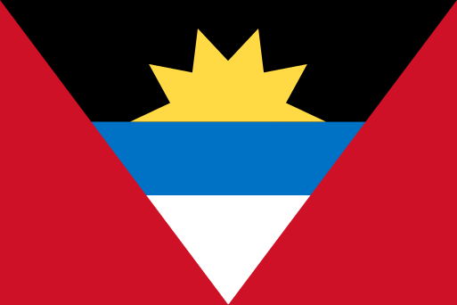
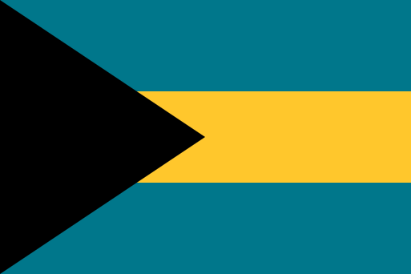
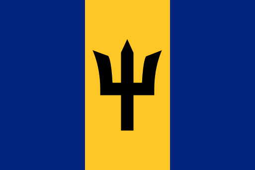
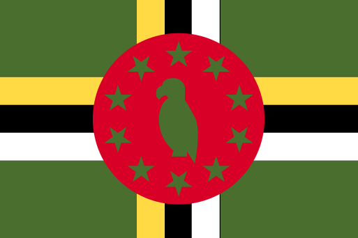
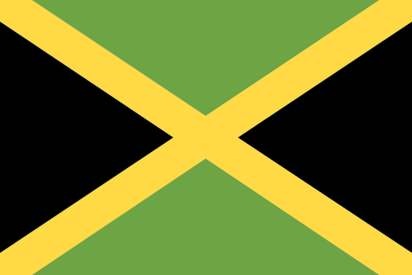
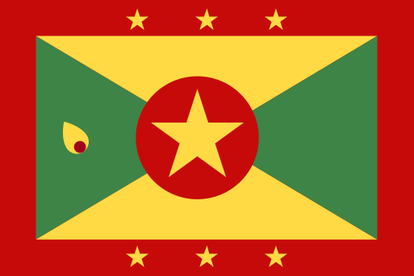
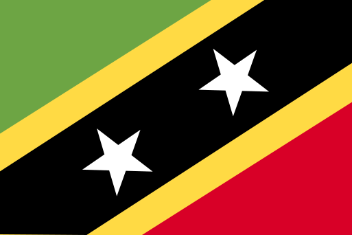
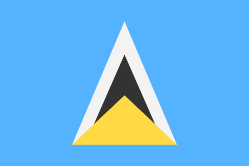
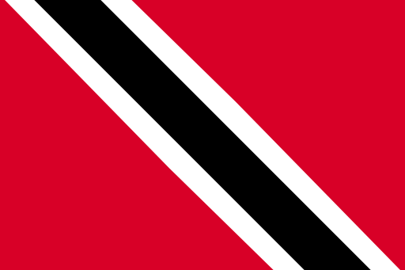

Quali paesi non hanno confini terrestri?
Sono 40 i paesi del mondo che non confinano via terra con nessun altro Stato: sono tutti Stati insulari, formati da un'isola o da un arcipelago, oppure, come l'Australia, occupano da soli un intero continente.
Alcuni sono grandi e molto popolati, come il Giappone, le Filippine o il Madagascar; altri sono tra gli Stati più piccoli del mondo, come Nauru, Tuvalu o le Maldive. Non compaiono qui le isole divise tra due paesi, come Hispaniola (Haiti e Repubblica Dominicana), Timor (Indonesia e Timor Est) o l'Irlanda (Irlanda e Regno Unito).
Europa 3
Asia 7
Africa 6
Nord e Centro America 11

Antigua e Barbuda
Bahamas
Barbados Cuba
Cuba
Dominica
Giamaica
Grenada
Saint Kitts e Nevis
Saint Lucia Saint Vincent e Grenadine
Saint Vincent e Grenadine
Trinidad e Tobago